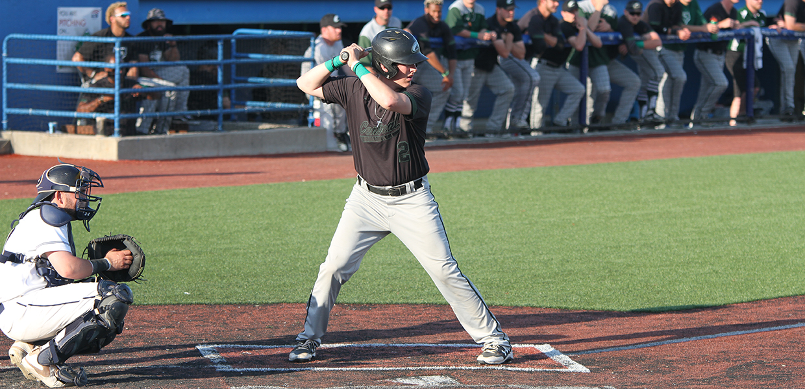
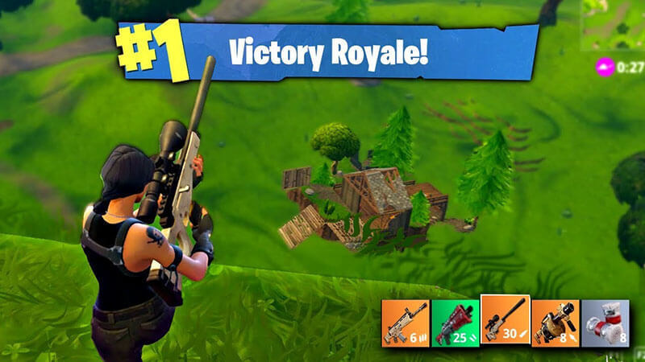

home page
About me
Hobbies
Courses and Activities
My Top 3 Hobbies
Playing Baseball
I have been watching baseball since I was about 6. I only started playing when I
was 10 in 6th grade. I have been on 11 different baseball teams. I have baseball
almost every single day and it has been a blast playing with all my friends and
meeting new friends on different teams. This year I play for Bordentown Freshman,
Bordentown JV, Hamilton Bulls and Liedtka Fuel. I play pitcher, pitcher catcher and
third base. This year I have about 25 strikeouts in 18 innings pitched.

Playing/ Watching Fortnite
Ever since Fortnite came out I have really been into the game. Although before
I ever played it I said I didnt like it because thats all every one talked about.
Plus I had no way to play the game since I had an outdated console. Once I started
to get into fortnite, I only played fortnite. I wouldn't play any other game besides
fortnite because of how fun it was.

Fishing
I love to go fishing when I am bored or stressed out because of how fun it is and how it just
relaxes me and when you catch a fish it is an amazing feeling. I go with my Uncle buddy who is
an expert fisherman, Although one day I caught more fish than he did and I felt proud of my self.
I would recommend fishing for anyone who feels down or stressed.